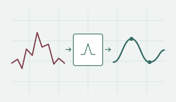

Machine learning · Optimization · Reliable systems
Research with real-world constraints.
I’m Tara, a PhD researcher working on machine learning and optimization for reliable, resource-efficient computing.
Since November 2023, I’ve been part of the Chair of Dependable Nano Computing at Karlsruhe Institute of Technology. I develop methods to train models for variable devices, reveal hardware faults through testing, and work within power and resource constraints.
My background is in Computer Engineering and Artificial Intelligence at Shahid Beheshti University in Tehran. My master’s research focused on 3D medical image analysis and radiotherapy dose prediction. Today, my work spans learning algorithms, simulation, and experimental evaluation for emerging hardware.
گندمی را زیر خاک انداختند
پس ز خاکش خوشهها بر ساختند
“A grain of wheat was buried in the earth;
from that earth, ears of wheat arose.”
Research highlights
All research →
Compact tests for neural networks
Searching for inputs that reveal failures in neural networks.

Learning with imperfect devices
Time-series learning with device variation and noisy sensors.

From medical images to dose maps
Connecting organ segmentation with radiotherapy dose prediction.
Experience & education
Full background →Academic path
- 2023–present
- PhD researcherKarlsruhe Institute of Technology
- 2023
- MSc, Artificial IntelligenceShahid Beheshti University
- 2020
- BSc, Computer EngineeringShahid Beheshti University
Supervision & teaching
Alongside research, I supervise student projects in machine learning reliability and software development.
- Software projectsAIChat for KIT, RuleCity, ZipSolver
- Bachelor’s projectsFlex-Spike, GradCircuit
- Teaching assistanceDeep Learning; Signals and Systems
Technical skills
- Learning & evaluation
- PyTorch, PyTorch Lightning, scikit-learn, Monte Carlo evaluation, MLflow.
- Optimization
- Evolution strategies, CMA-ES, gradient-based and constrained optimization.
- Data & engineering
- Python, 3D Slicer, simulation data, Cadence Virtuoso, SKILL Bridge, Git.